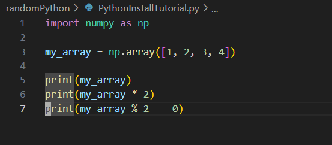
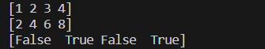

Python Installation Tutorial
Article by Ty Davis
Technical Instructions Major Assignment
The following is a tutorial to aid you in installing Python on Windows 11. It will be the same process found on other versions of Windows as well. Follow the steps closely to install the program and get scripting right away!
Step 1 - Download and Install Python and VS Code
The first thing that you need to do is download and install the necessary programs that you'll need. You need both Python and Visual Studio Code (VS Code).
First for python:
Go to the Python Website and click the "Download Python 3.11.4" link.

After the installer has downloaded, click to run the installer, or find it in your downloads folder. It should open up a window that looks like this:

Click through the next buttons and choose the settings that you would like. Make sure the options that say add to path or add to system variables are enabled.
Now do the same for Visual Studio Code.
Step 2 - Ensure that Python was added to the Path correctly.
Open up a terminal window. This can be done by clicking the Windows key and typing in "Powershell" and then selecting Windows PowerShell from the search results. That should open up a window that looks like this:

Now type python --version into the terminal and hit enter. You should get a response like the following (yours might list a different version):

Step 3 - Install Necessary Extensions for Python in VS Code
Open up VS Code and click on the extensions icon on the left as seen in the image below. The icon like like four blocks with one separated.

Select the Python extension provided by Microsoft and click "Install".
Step 4 - Use Pip to install any necessary modules for your projects
Press Ctrl + Shift + ` on your keyboard to open up the VS Code integrated terminal and input the command pip install [needed-module], but replace [needed-module] with the module you need for your project. The following example shows how to install the numpy module.

Step 5 - Test the Installation of Python and any Modules
Below is a small script that shows the testing of the numpy module.
The following is the output of the previous python script. It shows the proper use of the numpy module's ability to perform a single function (such as multiplication or truth comparison) on every value in an array in just one line of code.
You're done!
Thanks for joining me as I walked you through the process of installing Python
on Windows and the setup of the VS Code Development Environment. I hope this can
aid you in your software development journey.
Now you can enjoy using python and get scripting in VS Code with
automatic syntax highlighting, code completion, and debugging. Enjoy!
Back to the Cover Memo page.